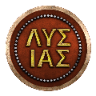

Imperium
Imperium  Macedonian
Macedonian
← all beliefs · all cultures · all regions · wiki index
Internal token macedonian, in the hellenic group. 137 of 1,311 regions · named as a people in 183 · 10 factions default to it
Where these answers come from
descr_beliefs.txt declares the belief, its pip and its localised name. Where it is is the rel_<belief>_<tier> tag on a region's tag line in descr_regions.txt — the trailing digit is a 1-4 strength tier and never a percentage. Who the people are is that same file's ancestry field, whose shares do sum to 100. Who follows it is stated twice, by descr_sm_factions.txt's default religion and by export_descr_buildings.txt's faction_religion_<belief> alias, and where the two disagree both are shown. What the mod does with it is read off export_descr_buildings.txt, with the clauses that GENERATE the belief kept apart from the clauses the belief GATES.
Where it is on the map
137 of the 1,311 regions carry a rel_macedonian_… tag — 10.5% of the map. The number on a rel_… tag is a 1-4 strength tier, not a percentage. Any tier counts as the belief being present; what the tier changes is how much religious_belief a building generates, and the table below is that mapping read off export_descr_buildings.txt.
| Strength | Regions | Share of its regions | Strength | Regions | Share of its regions | Strength | Regions | Share of its regions |
|---|---|---|---|---|---|---|---|---|
| 4 / 4 | 35 | 26% | 3 / 4 | 18 | 13% | 2 / 4 | 21 | 15% |
| 1 / 4 | 63 | 46% |
Tier 4 of 4 — 35 regions
Amphaxitis · Anatolike Chalybonitis · Anthemousia · Apamene · Apolloniatis-Mesopotamia · Belos · Bottiaia · Charakene · Chrysorrhoas · Datos · Deire · Emathia · Epi Theron · Gaulanitis · Gynaikopolites Nomos · Iaxartes · Kyrrhestike · Leuke Akte · Lynkestis-Eordaia · Mardyenia · Mlaundos · Nikephoreia · Notia Bithynia · Notia Bottiaia · Orgasia · Osrhoene · Oxeiane · Paralia Chaldaia · Pelopeia · Pieria · Pieria-Syria · Rabat Xaman · Sittakene · Thinites-Diospolites Mikros Nomoi · Zeugma-Euphrates
Tier 3 of 4 — 18 regions
Anatolike Phrygia · Boreia Trogodytike · Deuriopos-Pelagonia · Dolicheia · Elymais · Emesene · Kabylia · Khalab · Massyas Pedion · Mysia · Notia Charakene · Orestis-Elimeia · Paroreia Pisidia · Peraia · Sintike-Odomantike · Synnadia · Syria · Tingene
Tier 2 of 4 — 21 regions
Aidaia · Ano Baktriane · Arabike Aigyptos · Bithynia · Edonis · Erythra Thalassa · Heroon Kolpos · Hesperos Aigyptos · Kapisene · Karmania · Kaystros · Lydia · Mallotis · Massyas · Mygdonia-Syria · Nippour · Nisaia · Notia Parthia · Paroreia Phrygia · Pisidia · Syromedia
Tier 1 of 4 — 63 regions
Anaouon · Anatolike Assakenia · Anatolike Sogdiane · Anatolike Tracheiotis · Arachosia · Ariane · Arka · Arrhapachitis · Arsinoites-Aphroditopolites Nomoi · Ashdud · Ashqalon · Aspasia · Assakenia · Bambyke · Basilike Brenaia · Boubastites-Arabia Nomoi · Chalkidike · Chalonitis · Dassaretia · Deutera Oasis · Dioskoridou Nesos · Dorylaia · Drangiane · Erigonia · Etennia-Kotennia · Eumolpia · Gadaris · Gazaia · Gouraia · Hermopolites-Kynopolites Nomoi · Hesperos Pisidia · Idrias · Ioudaia · Issikos Kolpos · Katakekaumene Lykaonia · Khamat · Kharranu · Kibyratis · Kilikia · Kyreschata · Margiane · Media · Megale Phrygia · Menelaites-Prosopites Nomoi · Mese Ariane · Mesopotamia · Mygdonia · Notia Margiane · Notios Dodekaschoinos · Oxos · Oxyrhynchites-Herakleopolites Nomoi · Paralia · Parthia · Pelousiake · Prote Oasis · Pyramos · Pyrogeria · Rhagiane · Sebennytes-Bousirites Nomoi · Shamerayin · Sipylos · Tracheiotis · Tymphaia
The people it belongs to
descr_regions.txt names Macedonian as a people living in 183 regions, 32 of them as the majority. Those shares come from the region's own ancestry field, which sums to 100 — they are a different measurement from the strength tier above and are not comparable with it.
Where its people live (183)
The two vocabularies do not line up exactly. 46 regions name this people but carry no belief tag for it — Paionia, Kardia, Bessike, Poltymbria, Sapaia-Bistonia, Korinthia, Ambrakikos Kolpos, Magnesia, Pessinountis, Charonia, Petnelissos, Lykaonia, and 34 more. 0 carry the tag without naming the people. Which of the two the mod means as authoritative is not determined; both are shown.
Who follows it
10 of the 239 factions in descr_sm_factions.txt carry "default religion": "macedonian". Between them they hold 247 of the 1,305 settlements the campaign file places.
| Faction | Culture | Provinces | Faction | Culture | Provinces | Faction | Culture | Provinces |
|---|---|---|---|---|---|---|---|---|
| Eastern Hellenistic | 115 | Eastern Hellenistic | 84 | Western Hellenistic | 34 | |||
| Cyrene | Eastern Hellenistic | 7 | Seleucid Rebels | Eastern Hellenistic | 4 | Pergamon | Western Hellenistic | 2 |
 Lysiad Kingdom | Greek | 1 | Hellenistic Rebels | Western Hellenistic | — | Ptolemaic Rebels | Eastern Hellenistic | — |
| Seleucid Rebels | Eastern Hellenistic | — |
export_descr_buildings.txt answers the same question separately, with alias faction_religion_macedonian, and that alias is what the temples and government levels actually test. It names 9 entries.
The two files disagree, and this page does not resolve it. Hellenistic Rebels declares this as its default religion but is not in the alias, so the buildings file will not treat it as Macedonian.
What builds it
These building levels generate the belief in a region that already carries its tag, and the amount is what the tier decides. This is what the 1-4 tier is *for*.
| Where | tier 1 | tier 2 | tier 3 | tier 4 | Where | tier 1 | tier 2 | tier 3 | tier 4 | Where | tier 1 | tier 2 | tier 3 | tier 4 |
|---|---|---|---|---|---|---|---|---|---|---|---|---|---|---|
| Dependency | +4 | +8 | +12 | +16 | Direct Rule | +2 | +4 | +6 | +8 | Indirect Rule | +4 | +8 | +12 | +16 |
| Large Colony | +10 | +10 | +10 | +10 | Region Information Scroll | +2 | +4 | +6 | +8 | Small Colony | +6 | +6 | +6 | +6 |
2 further grants are made only where the belief is not already present — that is the conversion path, and it stops once the belief is there.
| Where | What | Where | What | Where | What |
|---|---|---|---|---|---|
| Large Colony | Macedonian belief +16 | Small Colony | Macedonian belief +8 |
Spread by conversion — 35 lines
Beyond the tier table, 35 further religious_belief macedonian lines grant it on conditions that are not about the tier — who owns the settlement, what government it has, whether the belief is present at all. These are the conversion and temple rules.
| Where | Lines | Amounts | Where | Lines | Amounts | Where | Lines | Amounts |
|---|---|---|---|---|---|---|---|---|
| Shrine, Temple, Large Temple, Awesome Temple, Pantheion | 11 | +1, +2, +4, +6, +8, +10 | Small Colony, Large Colony | 6 | +2, +4, +6, +8, +10, +16 | Small School (Civic), Academy (Civic), Great Academy (Civic), Mouseion and the Great Library, Library of Pergamum | 5 | +1, +2, +3 |
| Racing Course (Leisure), Stadion (Leisure), Hippodrome (Leisure), Huge Hippodrome (Leisure) | 4 | +2, +3, +4 | Town Theatre (Leisure), Odeon (Leisure), Theatre (Leisure), Great Theatre (Leisure) | 4 | +2, +5, +7, +9 | Court of Law (Civic), Magnificent Court of Law (Civic) | 2 | +1, +2 |
| Amber Exports (Urban) | 1 | +2 | Homeland | 1 | +16 | Region Information Scroll | 1 | +16 |
What it gates
Nothing. No building level and no recruitment line in the mod is conditioned on a belief: all 273 building level blocks and all 29,894 recruit lines were checked against every rel<belief>_<tier> token, and 0 levels and 0 recruit lines came back. A belief is a number a settlement carries, not a key that opens anything._
Unrest and identity
| Group | hellenic (hellenic) — the buildings file tests this group directly, with faction_religion_group_hellenic | Character trait | BeingMacedonian | Unrest against its own group | 0 |
| Unrest against other groups | 0 | Hidden at zero presence | yes | Unrest message | “Macedonian culture is causing unrest in this settlement” |
Every one of the 53 beliefs RIS declares sets both multipliers to 0. No belief in this mod creates unrest against another, whether they share a group or not — the religious tension of the base game is switched off across the board, and what the belief system is used for instead is the numbers above.
Its group
The hellenic group (hellenic) holds 13 beliefs. The others are  Aeolian,
Aeolian,  Arcadian,
Arcadian,  Bosporan,
Bosporan,  Cypriot Greek,
Cypriot Greek,  Dorian,
Dorian,  Epirote,
Epirote,  Greco-Bactrian,
Greco-Bactrian,  Greek,
Greek,  Indo-Greek,
Indo-Greek,  Ionian,
Ionian,  Northwest Greek,
Northwest Greek,  Pamphylian Greek.
Pamphylian Greek.
A group has no name of its own in the mod — descr_beliefs.txt declares the token hellenic and no text file localises it. No belief carries that token either, so the token is printed as it stands.